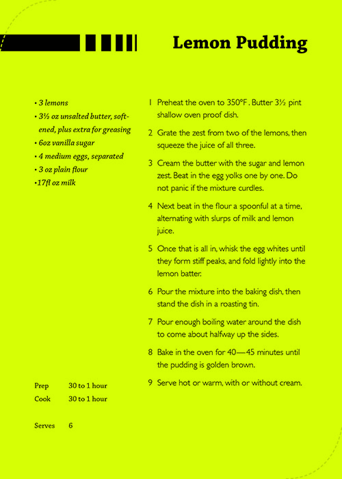

Lemon Pudding
- Preheat oven to 350 ℉ Butter a 2 liter shallow oven proof dish.
- Gragte the zest from two of the lemons, then squeeze the juice of all three.
- Cream the butter with the sugar and lemon zest. Beat in the egg yolks one by one.Do not panic if the mixture curdles.
- Next beat in the flour a spoonful at a time, alternating with slurps of milk and lemon juice.
- Once that is all in, whisk the egg whites until they form stiff peaks, and fold lightly into the lemon batter.
- Pour the mixture into the baking dish to come about halfway up the sides.
- Pour enough boiling water around the dish to come about halfway up the sides.
- Bake in the over for 40-45 minutes until the pudding is golden brown.
- Serve hot or warm, with or without cream.